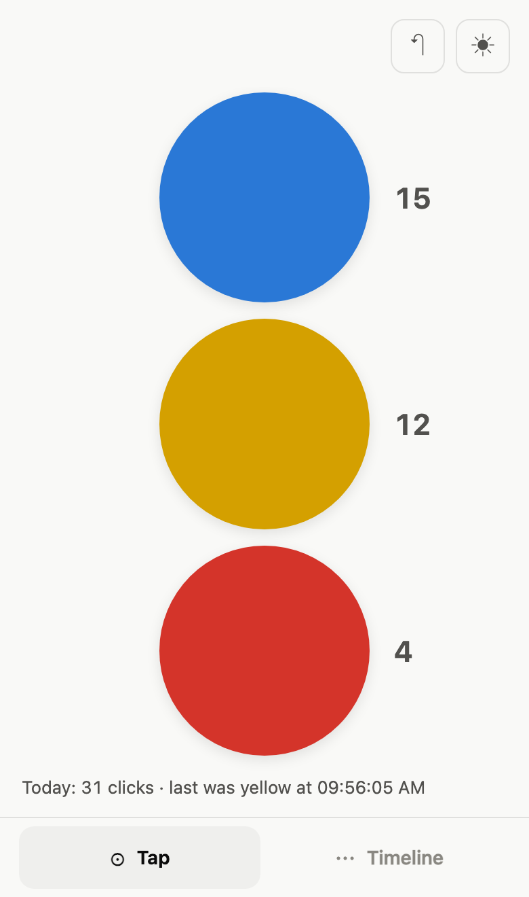
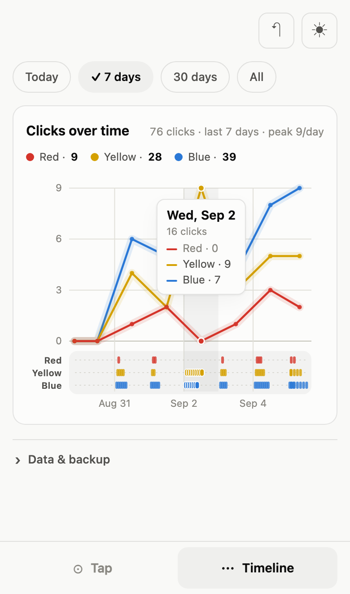

A counter for anything you can be bothered to count. Three buttons, one chart, no cloud.
Just give me the buttons →Free · No account · Works offline


Blue, yellow, red.
When you don’t want to count.
Whatever that means.
Count anything.
What people count
It is a three-button counter. It will not sync, remind you, or send a year in review. If that is all you needed, it is right here.